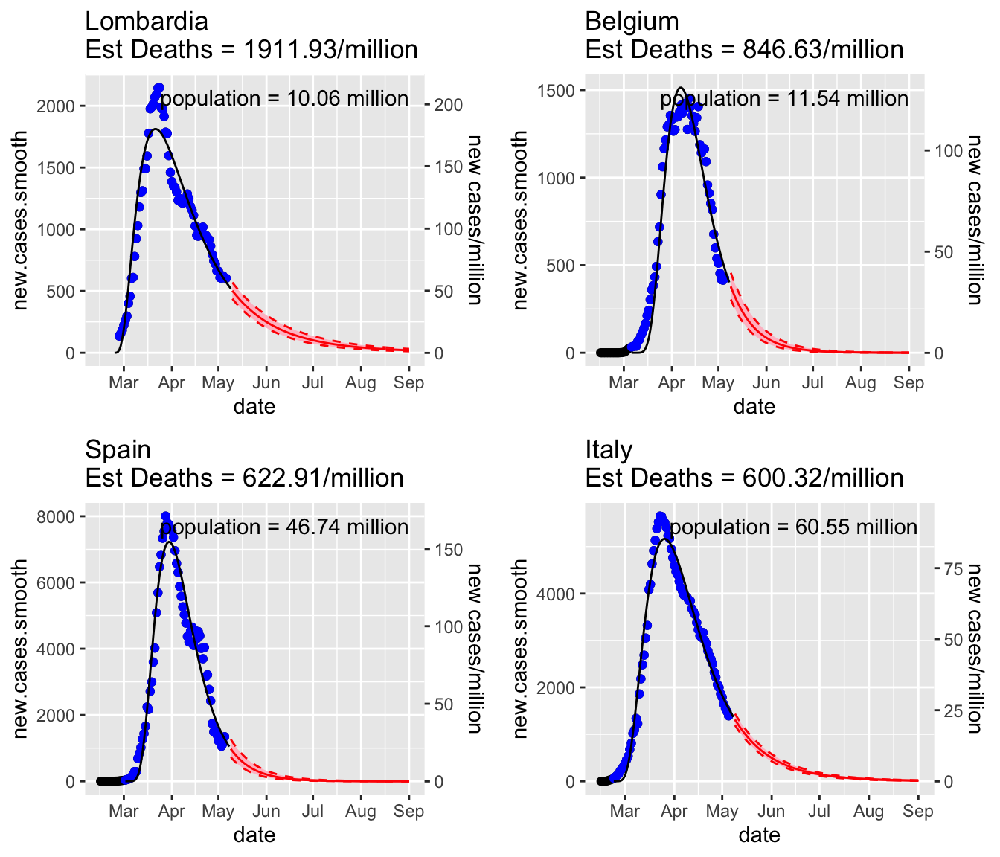
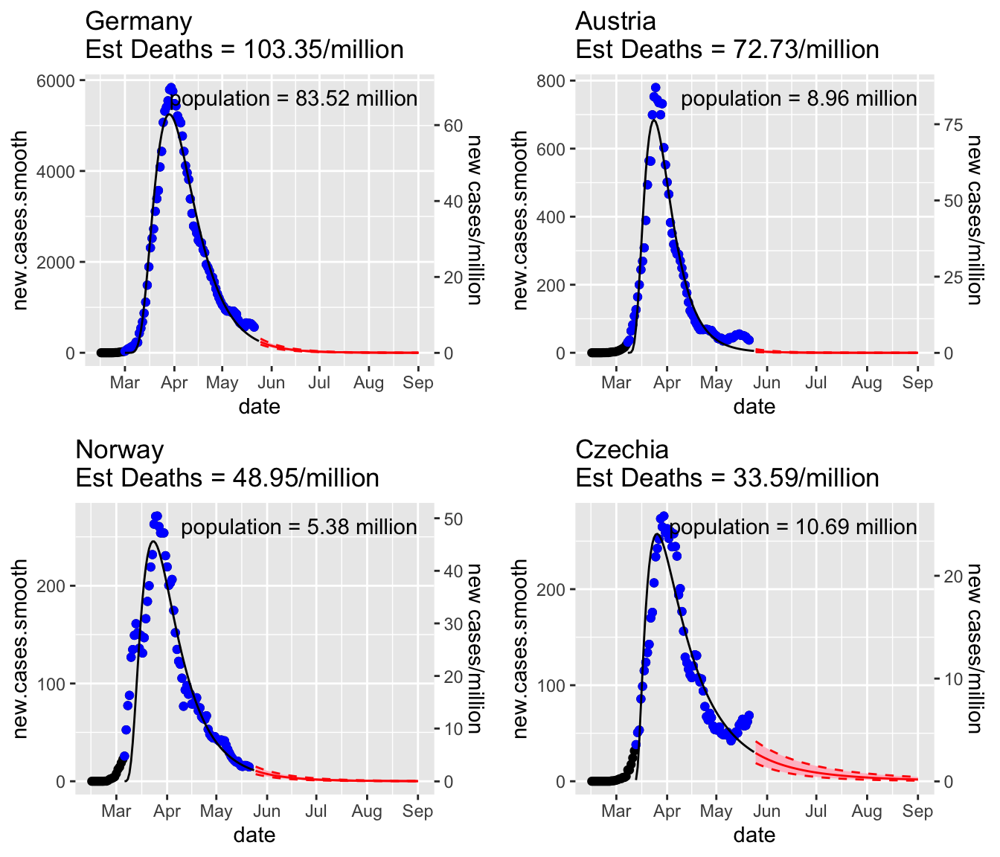
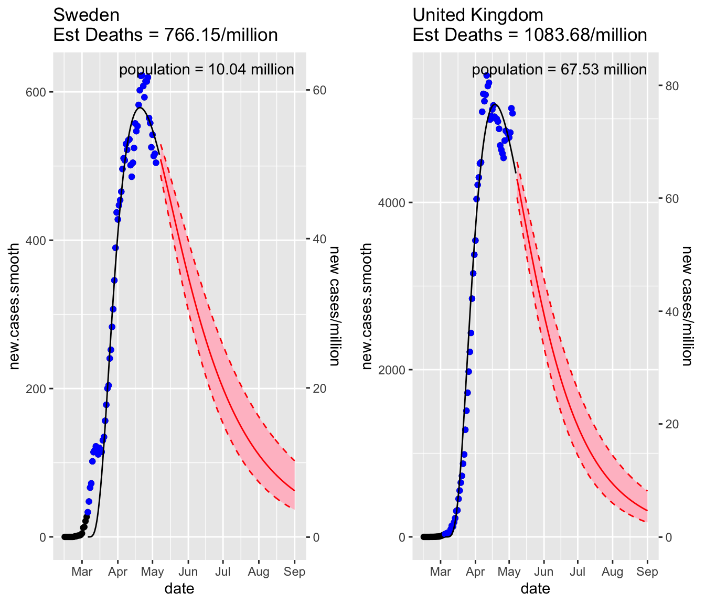
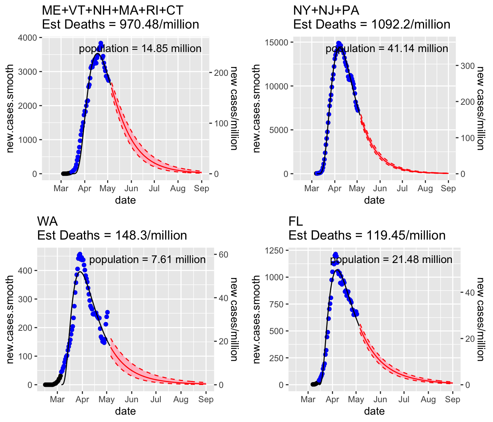
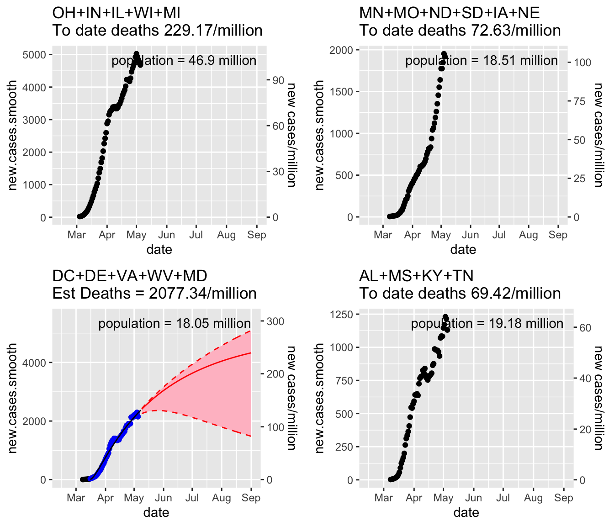
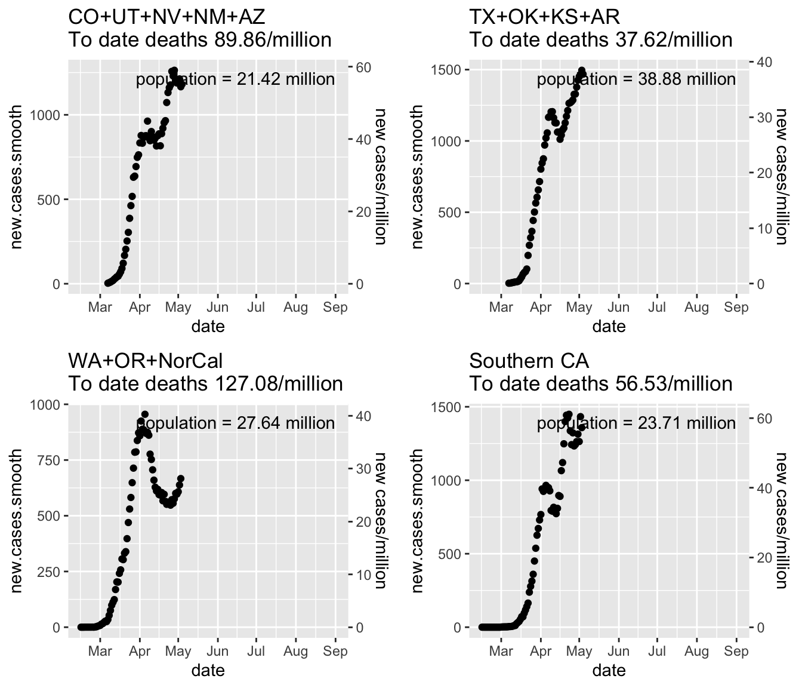
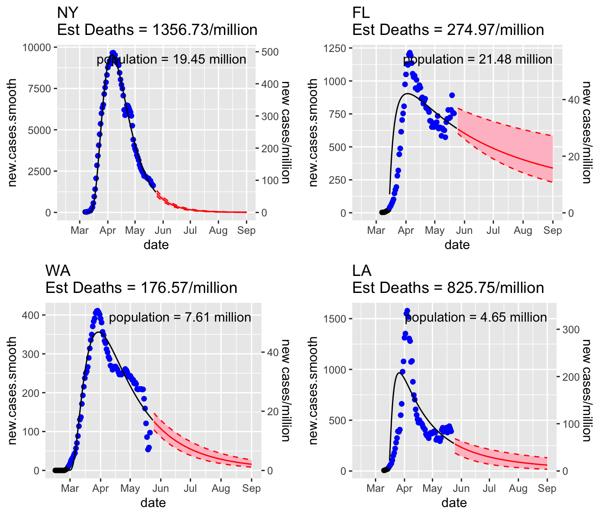

Patterns
If the model fits, then the blue dots are the smoothed (7-day average) new cases to which the model was fit. The deaths are estimated as CFR (estimated based on 7-day lag) times estimated number of positives (from curve fitting a log-normal). The actual deaths are used for the time up to the current date and on to this are added future deaths (from estimate of new positives) and the deaths from the last 7-days of new positives.
Things over by early June for much of Europe
Most of Europe had an effective lockdown and the epidemic curves look like there will be low rates by early June. The death rates per million vary from 1900-600 for contries that took a slower pace of lockdown to under 100 deaths per million for countries that locked down early and stopped transmission effectively.
Regions and countries with high spread and lockdown
Death rates 1900 to 600 per million people. Lockdown after widespread spread or lockdown insufficient.

Regions with effective lockdown
These are cases where new cases/million went over 50-100, but lockdown was effective and stopped the rise and lowered infection rate. Death rate 500 to 150 per million.

Regions with very early lockdown. Low spread.
Death rate below 100 per million.

Sweden and the UK
Sweden has done a “soft” lockdown and the UK delayed lockdown. Both look to be headed towards the higher end of death rates per million in Europe, 800-1000 deaths per million, but it will be spread out over the whole summer. However we can’t really see much of the downward curve, things could definitely change. The projection is the ‘optimist’ projection assuming thing do not get worse.

North America
My hope had been that by looking at Europe, I could understand what was likely to happen in the US, but that doesn’t seem to be the case outside of the northeast.
New England and the Mid-Atlantic look a lot like Europe, at least like the European countries that have a high fraction infected. Projected reported death rates are looking like they’ll be close to 1000 per million and the curve is similar to what has been seen in Europe. If the curve continues (that’a a big if), then this wave of the epidemic would be over in early August. The same looks to be the case for Washington and Florida, although Washington has a new outbreak in Yakima (last 2 point on the curve) and that might break the curve for Washington.

When we look across the US however, there is either no peak or, in WA+OR+NorCal, signs of a 2nd rise starting already.


Overall, it looks like a long summer. In terms of what kind of death rates to expect for the first wave in the US, in Europe and in the US Northeast, the high rates were about 1000 per million. In Europe, some countries controlled the wave down to under 500 per million or even under 100 per million.
Right now in the US, only a handful of states have trajectories that look like European countries with a clear peak, a large portion of the downward decline done and no funky 2nd peaks starting: NY, ID, HI, FL, LA and maybe WA (if the Yakima outbreak doesn’t get out of control). HI is an island and closed entry (quarantine required) and ID outbreak was at a destination ski area. Both WA and LA show signs of a 2nd peak starting to form.
So looking at the regional plots above, there is not any signal about where the peak might be. At the minimum, these regions will see double what the death rate to date is. That’s the bare minimum since since if you are not at the peak, even if the turn downward happened today, there’d still be the same number of deaths on the downward side. But the downward side tends to be thicker (slower descent) and the deaths from the last 7-days of positive cases have yet to show up.
